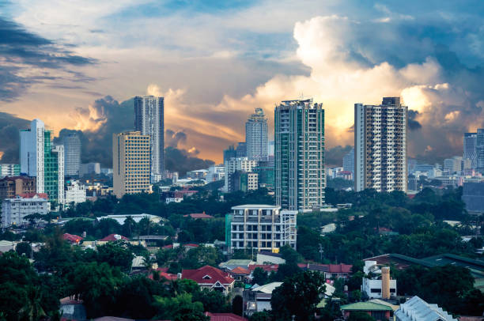
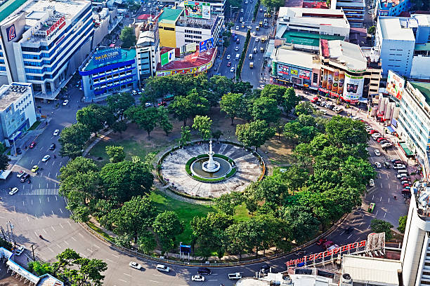
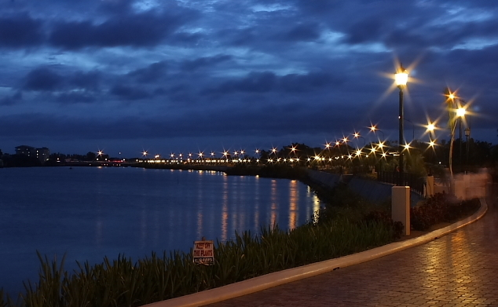
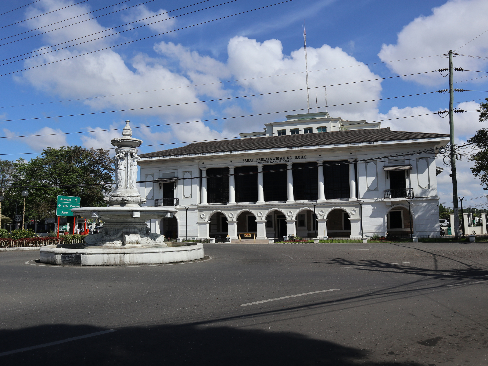
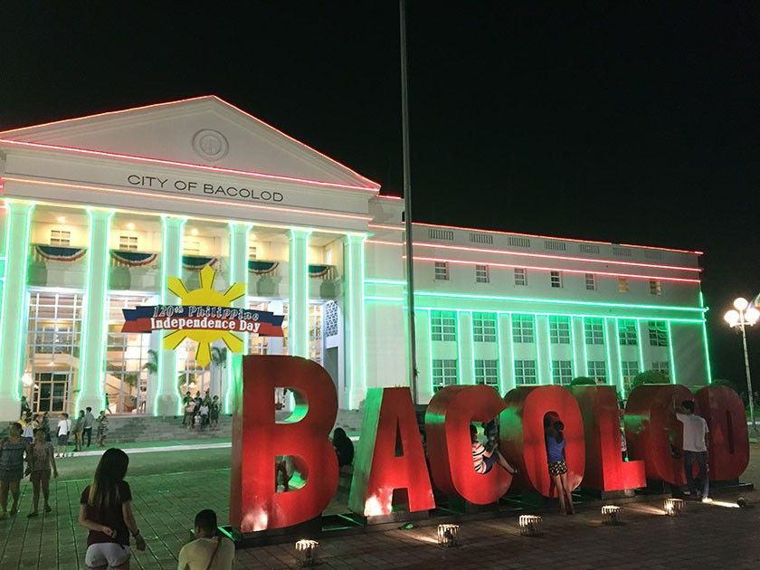
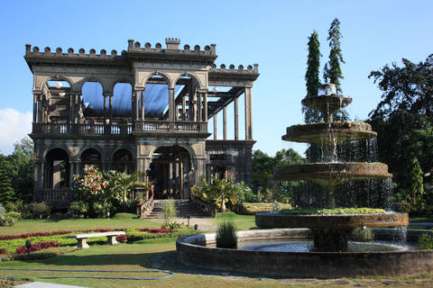

Cebu City
Cebu City, city, Cebu Island, south-central Philippines. Located on Cebu Island’s eastern coast, it is protected by offshore Mactan Island and by the inland Cordillera Central. It is one of the country’s largest cities and is a bustling port. Its harbour is provided by the sheltered strait between Mactan Island and the coast. The country’s oldest settlement, it is also one of its most historic and retains much of the flavour of its long Spanish heritage. A thriving port occupied the site when Ferdinand Magellan, the Portuguese navigator and explorer, landed there on April 7, 1521. He sealed a blood compact with Humabon, the chief of Cebu, but was killed later by Chief Lapulapu of nearby Mactan Island.
 Iloilo City
Iloilo ([ɪlo.ˈilo]), officially the Province of Iloilo (Hiligaynon: Kapuoran sang Iloilo; Kinaray-a: Kapuoran kang Iloilo; Tagalog: Lalawigan ng Iloilo; Spanish: Província de Iloílo), is a province in the Philippines located in the Western Visayas region. Its capital and largest city is Iloilo City, the regional center of Western Visayas. Iloilo occupies the southeast portion of the Visayan island of Panay and is bordered by the province of Antique to the west, Capiz to the north, the Jintotolo Channel to the northeast, the Guimaras Strait to the east, and the Iloilo Strait and Panay Gulf to the southwest.
 Bacolod City
>BACOLOD CITY, known as the City of Smiles, is one of the highly urbanized cities in the Philippines today. It is the capital city of Negros Occidental Province and the second most popular city in Visayas next to Cebu City. ‘Bacolod’ was derived from the Ilonggo word “bakolod” which means stone hill, since the settlement was founded on a stone hill area, now the district of Granada, in 1770. In 1894, Bacolod was officially made the capital of the Province of Negros by the order of Governor General Claveria. It was officially called the City of Bacolod when Municipality of Bacolod was converted to a city in 1938.
 